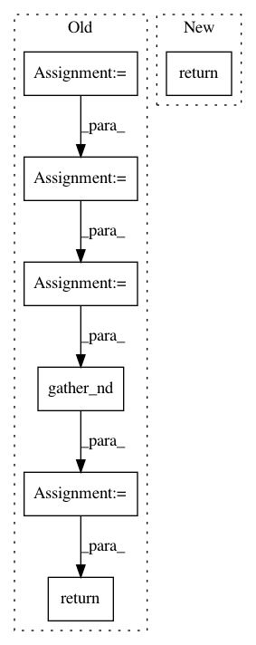

83ea5808a36de70b86c07bcb02211fd07041532e,opennmt/models/sequence_to_sequence.py,,align_tokens_from_attention,#Any#Any#,377
Before Change
batch_size = tf.shape(tokens)[0]
max_time = tf.shape(attention)[1]
batch_ids = tf.range(batch_size)
batch_ids = tf.tile(batch_ids, [max_time])
batch_ids = tf.reshape(batch_ids, [max_time, batch_size])
batch_ids = tf.transpose(batch_ids, perm=[1, 0])
aligned_pos = tf.stack([batch_ids, alignment], axis=-1)
aligned_tokens = tf.gather_nd(tokens, aligned_pos)
return aligned_tokens
def replace_unknown_target(target_tokens,
source_tokens,
attention,
After Change
The aligned tokens as a string ``tf.Tensor`` of shape :math:`[B, T_t]`.
alignment = tf.argmax(attention, axis=-1, output_type=tf.int32)
return tf.gather(tokens, alignment, axis=1, batch_dims=1)
def replace_unknown_target(target_tokens,
source_tokens,
attention,
In pattern: SUPERPATTERN
Frequency: 3
Non-data size: 7
Instances
Project Name: OpenNMT/OpenNMT-tf
Commit Name: 83ea5808a36de70b86c07bcb02211fd07041532e
Time: 2019-09-03
Author: guillaume.klein@systrangroup.com
File Name: opennmt/models/sequence_to_sequence.py
Class Name:
Method Name: align_tokens_from_attention
Project Name: OpenNMT/OpenNMT-tf
Commit Name: 27185a3ca428d1298811a6c048870d992c05a0d4
Time: 2020-03-06
Author: guillaumekln@users.noreply.github.com
File Name: opennmt/utils/decoding.py
Class Name:
Method Name: _gather_from_word_indices
Project Name: jfkirk/tensorrec
Commit Name: db4c8744b0c7fa95502e1172dd4c597e62e55b0e
Time: 2018-02-27
Author: james.f.kirk@gmail.com
File Name: tensorrec/loss_graphs.py
Class Name: WMRBLossGraph
Method Name: loss_graph